各位老师大家好，今天这堂课我们一起来学习「规划沟通」。在正式展开之前，我想先让大家建立一个最核心的认识：规划电访这通电话，非常重要。它不是一通随便跟家长寒暄的电话，而是我们在赛事招报正式开始之前，必须提前打好的一通前置电话。为什么说它重要？因为等到比赛报名正式开放以后，我们希望家长能够很顺畅地完成报名，而这份顺畅，恰恰来自招报之前的这通电话。在这通电话里，我们要提前把接下来要报名的这场比赛，它的价值和重要性跟家长讲明白，也把报名涉及的费用跟家长说清楚；同时，家长心里可能存在的各种疑问和顾虑，我们要在这通电话里提前沟通、提前化解掉。把这些功课都做在前面，等到招报真正开始的时候，我们就会轻松很多。家长已经了解清楚比赛是怎么回事，也清楚费用，心里没有遗留的顾虑，自然就能很快做出报名的决定，不需要我们在招报阶段再反复解释、反复催促。所以大家要记住：规划电访的本质，是在招报之前把沟通做足、把铺垫做到位，后面的报名才会水到渠成。
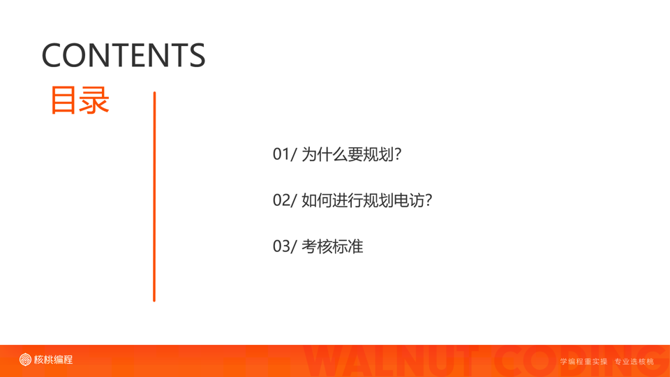
接下来，我们就围绕下面三个部分，一步步给大家展开讲。第一，为什么要做规划电访；第二，这通电话具体该怎么打；第三，我们用什么样的标准来考核这通电话。
我们先进入第一部分：为什么要做规划电访。这一部分我会结合赛事招报的时间安排，以及这通电话对家长、对我们老师分别起到的作用，带大家理清楚。
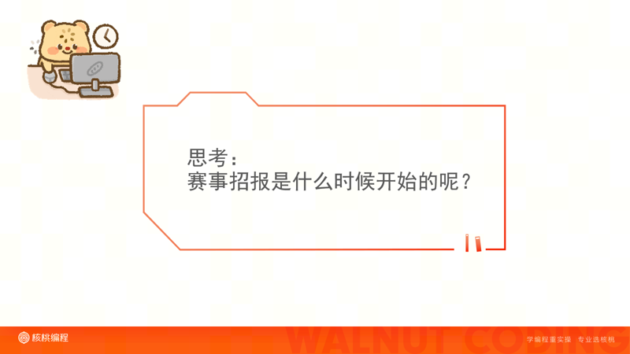
来看一道题，（多选，选2项）赛事招报会在哪个课次开始？
互动题
（多选，选2项）赛事招报会在哪个课次开始？
- A. L8-4
- B. L9-2
- C. L8-2
- D. L9-4
选错后：直接继续
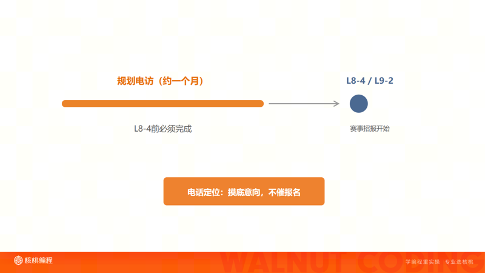
大家看这张时间线。赛事招报是在 L8-4 或者 L9-2 这个阶段才正式开始报名的。所以我们一定要赶在 L8-4 之前，用大约一个月左右的时间，把班里的孩子完整地做一轮规划电访。这里要强调一点：规划电访这件事，必须做到百分百覆盖，班里每个孩子我们都要打到，不能漏掉任何一个家长。那为什么非要提前花这么大力气做这一轮呢？是因为正式的赛事招报，从头到尾其实只有三天。这三天里，我们要把班上所有家长的意向和异议都处理完，时间是非常紧的。要想在这三天里把这件事高效做完，功夫其实就下在规划电访这里。我们需要在规划电访阶段，提前把家长可能存在的异议、真实的意向都排查清楚、摸明白。这样等到赛事招报正式开始以后，我们再去跟家长沟通，心里就有了优先级和顺序，哪些家长意向明确可以先跟进，哪些家长还有顾虑需要重点处理，都能安排得明明白白，处理起来也会更加高效。同时也要明确这通电话的定位：它主要是摸底家长的真实意向、提前做好铺垫，并不是在这通电话里催着家长报名，这个分寸大家要把握好。来看一道题，按PPT，规划电访的周期大约多长？
互动题
按PPT，规划电访的周期大约多长？
- A. 约一个月
- B. 约一周
- C. 约两个月
- D. 约半年
选错后：重讲本页重触发
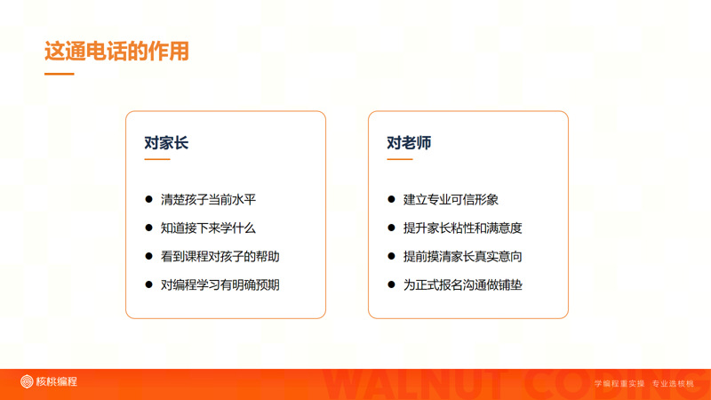
明确了电话的节奏和定位之后，这一页我们来看：这通规划电访，对老师、对家长分别能起到什么作用。先看老师这一侧。最直接的作用，是提前摸清家长的真实意向，把可能出现的异议在招报之前化解掉。在此之上，它还有一层更长远的价值：一通有数据、有规划、有针对性的电话，能够帮老师建立起专业、可信的形象，提升家长的粘性和满意度，也为后续正式的赛事报名沟通做好铺垫。再看家长这一侧。需要先说明的是，班里的家长基本都在上个学期经历过一次赛事招报，孩子目前大致分为三种情况：第一种，参加了考级并且顺利通过；第二种，参加了考级，但成绩不够理想，或者没有通过；第三种，上学期老师已经给出过比较完整的规划，家长仍然没有选择报名，这类家长往往存在一些尚未解开的顾虑。无论家长属于哪一种，我们都要通过这通电话帮他理清四件事：孩子当前处在什么水平，接下来将要学习什么，现阶段的课程对孩子有哪些切实的帮助，以及当下和未来的学习路径分别是怎样的。把这些讲清楚，家长才能对孩子的编程学习形成明确、稳定的预期。
前面我们已经理清了这通电话为什么要打，以及它对老师、对家长分别有哪些价值。那到底怎样才能把这通规划电话打好呢？接下来，我会从打电话之前要做的准备、一通电话完整的流程，再到家长常见异议的回应方式，一步步给大家拆开来讲。
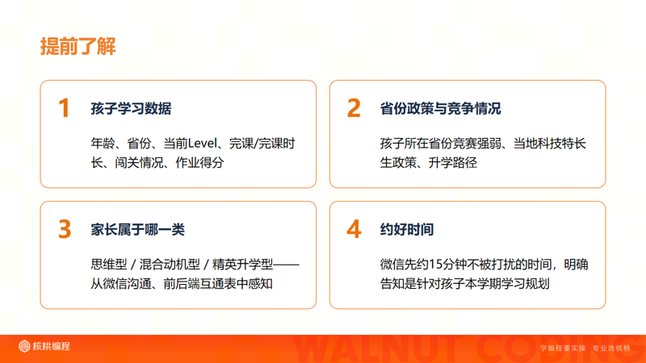
正式打电话之前，首先要做到知己知彼，这一点跟我们打首通电话是一样的：先把孩子的情况和家长的需求摸清楚。具体来说，打电话前我们需要了解四件事。第一，孩子目前的学习情况。一方面看本学期的学习数据，包括年龄、所在省份、当前所在 Level、完课情况和完课时长、闯关表现、作业得分；另一方面也要回顾上一个阶段，孩子有没有参加过考级，考级的结果怎么样。这些数据，就是后面我们跟家长反馈学情的依据。第二，简单了解孩子所在省份的竞赛强弱和当地政策，比如当地竞赛氛围如何、科技特长生政策怎样、升学路径是什么。举个例子，如果孩子在北京，我们心里就要清楚，这里的竞争压力是比较大的；如果是陕西、山西这类地区，目前编程方向的竞争压力相对小一些。地域情况不同，我们沟通的侧重点也会跟着调整。第三，判断家长属于哪一类型，是思维型、混合动机型，还是精英升学型。这个判断，可以从平时的微信沟通、前后端互通表的记录里去感知。不同类型的家长，沟通重点也不一样：思维型的家长，不宜过多强调比赛对升学的作用，含金量点到为止，重点放在对孩子思维的锻炼、竞赛水平和心理素质的提升上；混合动机型的家长，兴趣和升学两边都要兼顾到；精英升学型的家长，重点在于讲清这次选择对后续路径的铺垫，比如上次已经考过一级，这次去考二级和另一项含金量更高的比赛，既是对这段时间学习的检验和查漏补缺，也是为将来参加更高水平的比赛打基础。三类家长更详细的对比，我们在下一页展开。第四，提前约好通话时间。我们先通过微信跟家长约一段十五分钟左右、不被打扰的时间，并明确告知这通电话是围绕孩子本学期的学习规划来沟通。这样做，是为了避免通话时家长身边还有其他人，或者正在忙工作，无法说出真实想法。时间提前空出来，当我们问到他真实意向的时候，家长才能安心作答，把真实的想法和异议都暴露出来。
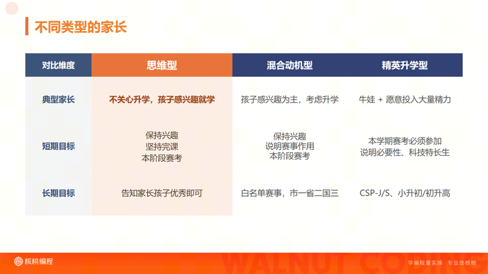
这一页我们详细讲解不同类型家长的沟通方式。表格从典型画像、短期目标、长期目标三个维度，对三类家长做了对比。首先是思维型家长。这类家长不太关心升学，孩子有兴趣，就愿意让他继续学。短期目标上，我们以保持兴趣、坚持完课、参与本阶段赛考为主；长期目标上，主要是让家长了解到孩子本身很优秀即可，不需要刻意往升学方向引导。第二类是混合动机型。孩子有兴趣是基础，同时家长也会考虑升学。短期目标上，以保持兴趣为主，同时向家长说明本期赛事的作用与本阶段赛考的安排；长期目标上，可以引导家长关注白名单赛事，争取拿到市一、省二、国三这样的成绩。第三类是精英升学型。这类家长的孩子本身基础较好，家长也愿意投入大量精力。短期目标上，本学期的赛考要明确参加，把参赛的必要性、科技特长生的路径向家长讲透；长期目标则对齐到CSP-J、CSP-S，以及小升初、初升高这样的升学规划。还有一个带班时的判断原则需要把握：目前实际带班中，思维型家长的占比是最高的。如果在 L8 轨迹以及前面的服务过程中，还不能明确家长属于哪一类，就一律先按思维型来做规划；后续沟通中，家长若逐渐表现出精英升学的倾向，再往那个方向靠拢。来看一道题，按PPT，混合动机型家长的短期目标是？
互动题
按PPT，混合动机型家长的短期目标是？
- A. 保持兴趣、说明赛事作用、本阶段赛考
- B. 保持兴趣、坚持完课、本阶段赛考
- C. 本学期赛考必须参加，说明必要性、科技特长生
- D. 白名单赛事，市一省二国三
选错后：重讲本页重触发
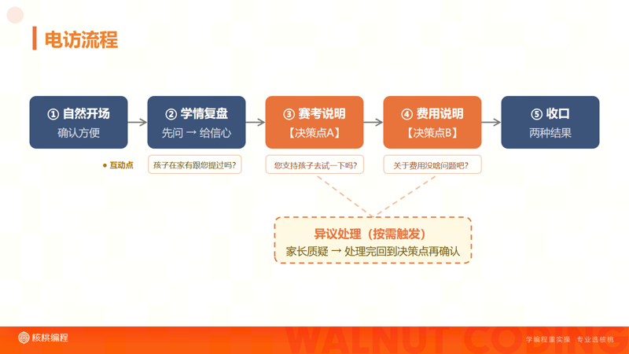
接下来我们看规划电访的完整流程，整通电话一共分为五步，中间设有两个决策点。下面我们按顺序一步步来讲。第一步，自然开场。接通后先确认家长现在是否方便接听，让家长感受到被尊重，再进入正题。这一步不用急于推销，先把沟通的氛围放松下来，保证家长能安心把这通电话听完。第二步，学情复盘。这里要注意顺序：先问，再给信心。我们先问家长一句："孩子在家有跟您提过上课的事吗？"先听听家长和孩子的真实感受，然后再开始反馈。学情复盘一定要有理有据，不能只看这一学期，还要和上一个阶段做对比，比如上阶段的完课率、随堂测正确率，这学期进步体现在哪里、有哪些课程上的高光时刻，让家长切实看到孩子学下去的希望。这一段具体怎么讲，我们下一页会展开，这里大家先记住三个步骤：给信心、提建议、带到赛考。第三步，赛考说明，这是决策点 A。我们把赛考的具体情况和后续规划跟家长讲清楚，这里同样要结合孩子上一阶段的考级情况来分类沟通。如果孩子没有参加过考级，要让家长知道，图形化算法阶段的赛考，是最后一次在图形化阶段检验孩子学习成果的机会；如果孩子参加过但没有通过，上学期已经积累了经验，这一阶段正好查漏补缺，给图形化的学习一个完美收尾；如果孩子参加并且已经通过，一级只是入门证明，二级更能体现孩子持续学习的能力，优势又增加了一层，这学期一定要接着参加。说明清楚之后，再问家长一句："您支持孩子去试一下吗？"确认他的态度。第四步，费用说明，这是决策点 B。如果家长没有异议、表示支持，我们就顺势把赛考的费用讲清楚，再确认一句："关于费用没啥问题吧？"确认家长在费用上是否还有顾虑。第五步，收口，拿到明确的结果。如果两个决策点都没有问题，就跟家长把报名的具体时间和安排说清楚，愉快地结束通话。如果家长在任何一个决策点提出异议，就触发异议处理。异议一定要在这通电话里及时解决，因为当下正是处理问题最合适的时机；处理完之后，要回到刚才的决策点再确认一次意向，不能默认家长已经同意。最后，规划电访主要包含哪些流程？来做一个题
互动题
规划电访主要包含哪些流程？
- A. 自然开场
- B. 学情复盘
- C. 赛考说明
- D. 费用说明
- E. 收口拿到结果
选错后：重讲本页重触发
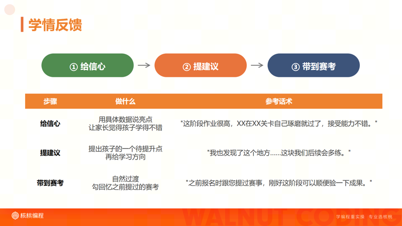
学情反馈不能只说孩子表现不错，那样太空了。可以拆成给信心、提建议、带到赛考三步。第一步，给信心。这个环节的重点，是讲清楚孩子二阶段这段时间的学习情况，最好能落到某一节课、某一个具体的场景上。比如课前直播里你和孩子做过什么样的互动，如果当时留有截图，讲出来会更加分。所以也建议大家平时带班时多留意、多给自己留存一些这类小物料，打电话时随手就能用上。反馈亮点时尽量用具体的数据和细节，让家长真切感觉到孩子学得不错，比如可以这样说："这阶段孩子的作业完成质量很高，XX 在 XX 关卡是自己琢磨着通过的，接受能力很不错。"第二步，提建议。这里要先说明，为什么一定要给孩子提出一个待提升点。一方面，现在的家长通常比较理性，一味地夸奖、只画大饼是行不通的，家长反而会觉得这个老师不够真实；另一方面，从我们后续做规划的角度看，先提出孩子的一个待提升点，再在接下来的学习中针对这个方向持续做功，等家长看到孩子在这一点上确实有了改变，就能非常直观地感受到孩子的进步，也能切实体会到这一学期学下来是有效果的。讲的时候可以先点出问题，再给出后续的学习方向，比如："我也注意到孩子在这个地方还有提升空间，这块我们后续会多带着练。"第三步，自然过渡到赛考。前两步讲完之后，不要生硬地切到报名，而是顺着学习情况把话题带到赛考上。可以先问一下上阶段的考试情况：如果孩子上阶段已经报名，就沿这个方向询问考试结果；如果上阶段没有报名，可以这样问："上个阶段我看咱 XX 没有参加考试，是时间不太合适，还是有其他特殊情况？"问清楚之后，再自然地把话题引回新学期，比如："这个阶段刚开始我也跟您电话沟通过，这学期我们同样会有赛事方面的规划，今天再跟您简单聊一聊这学期的赛事安排。"这样就把学情反馈和后面的赛考说明顺畅地衔接在了一起。
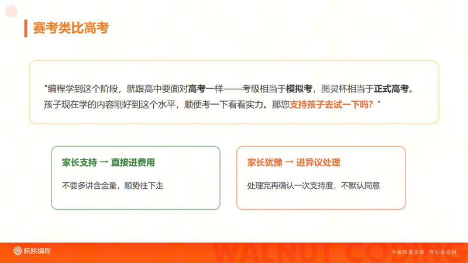
进入赛考说明这一步，我们先用一句简单的话，让家长明白孩子为什么要去参加赛事。这里可以用一个贴近家长认知的类比：编程学到现在这个阶段，就跟高中要面对高考一样，考级相当于模拟考，而正式的赛事就相当于高考。孩子现在所学的内容，刚好已经具备了对应的能力，不妨让他参加一下，顺便检验一下自己的实力。把这个道理讲清楚之后，接着向家长抛出决策问题："您支持孩子去试一下吗？"根据家长的反应，我们分两种情况往下走。如果家长表示支持，就顺势进入下一部分的费用说明。这里要注意，不要在这个环节过多展开比赛的含金量，避免节外生枝，顺着家长已经接受的态度往下走就可以。如果家长表现出犹豫，或者当场提出了异议，我们就先转入异议处理，针对他提出的问题逐一解答。异议处理完之后，还要再确认一次家长的支持度，不能默认他已经同意，确认家长态度明确之后，再继续往下推进。
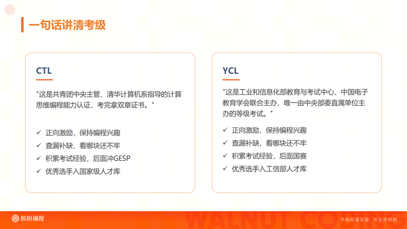
这一页和下一页，都是配合赛考说明使用的话术。当家长对考级或者赛事的含金量提出质疑时，我们不需要长篇大论地展开，用对应页面上的一句话，把考试的背景和含金量简单讲清楚就可以。先看两类考级。如果家长问起 CTL 有什么用，我们可以这样一句话带过：这是共青团中央主管、清华大学计算机系指导的C加加能力认证，考完可以拿到双章证书。在这个基础上，考级的作用主要有几点：通过正向激励，保持孩子学习编程的兴趣；帮助查漏补缺，看看哪些知识点掌握得还不牢；同时积累考试经验，为后面冲刺 GESP 做准备；表现优秀的选手，还可以进入国家级人才库。另一类是 YCL。它的一句话介绍是：这是由工业和信息化部教育与考试中心、中国电子教育学会联合主办，也是唯一由中央部委直属单位主办的等级考试。它同样能起到保持兴趣、查漏补缺、积累考试经验的作用，为后面参加国赛打基础，优秀选手可以进入工信部人才库。大家在使用时记住原则：家长问起来，先把主办单位和证书性质一句话说清，价值点到为止。来看一道题，考级的主要作用包括？
互动题
考级的主要作用包括（多选）
- A. 正向激励,保持编程兴趣
- B. 查漏补缺
- C. 积累考试经验
- D. 优秀选手有机会进入对应的人才库
选错后：重讲本页重触发
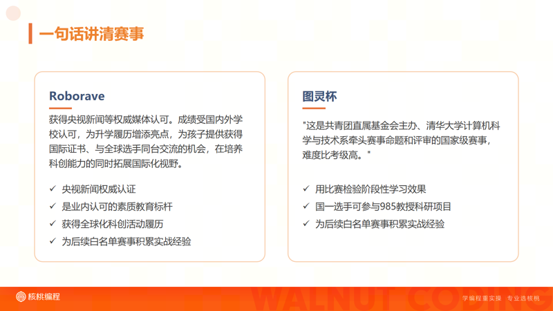
这一页是两个赛事的一句话介绍。第一类是 Roborave。它获得了央视新闻等权威媒体的认可，成绩受到国内外学校认可，可以为孩子的升学履历增添亮点；同时能让孩子拿到国际证书，有机会和全球选手同台交流，在培养科创能力的同时拓展国际化视野。概括来说，它既有央视新闻的权威认证，是业内认可的素质教育标杆，也能形成一份全球化的科创活动履历，为后续参加白名单赛事积累实战经验。第二类是图灵杯。可以这样一句话介绍：这是共青团直属基金会主办、由清华大学计算机科学与技术系牵头赛事命题和评审的国家级赛事，难度比考级更高。参加图灵杯，主要是用比赛检验孩子阶段性的学习效果；拿到国一的选手，还有机会参与 985 高校教授的科研项目，同时也为后续的白名单赛事积累实战经验。和上一页一样，这些介绍都是用来回应家长对含金量的疑问，点到为止即可，讲清楚背景和价值之后，再回到通话的主流程上。
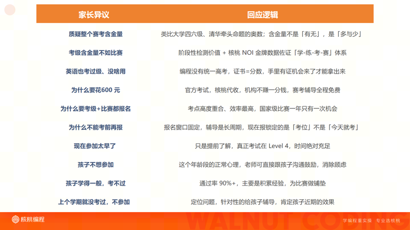
讲完考级和赛事，家长很容易抛出各种顾虑。这一页是高频异议的标准回应逻辑。核心原则是：不争执，先共情，再按逻辑解释，最后拉回目标，也就是回到决策点再确认一次意向。我们一条一条看。第一条，质疑整个赛考的含金量。回应逻辑是类比大学四六级、清华牵头命题的奥数，含金量不是有没有，而是多和少。可以这样说：不是一张证书就能直接升学，含金量是分梯度的，考级、赛事是一层一层往上积累的，是孩子能力的凭证。如果孩子之前参加过，还可以补一句，有了赛考基础，这学期通过的概率会更大。第二条，考级含金量不如比赛。先认同，比赛含金量确实更高，但考级是非常好的阶段性检测。再用核桃 NOI 金牌学员来佐证：很多金牌学员都是走学、练、考、赛这套体系，先用考级摸清漏洞，再冲赛事，一步一步往上走。第三条，英语也考过级，没啥用。回应逻辑是，英语有中考、高考统一考试，可以直接看分数；编程没有统一的升学统考，证书就相当于孩子的分数证明，等到有科技特长、择校机会的时候，手里有证书才能拿出来。第四条，为什么要花 600 元。这是官方考试的报名费，核桃只是代收，机构不赚一分钱，而且配套的赛考辅导全程免费。第五条，为什么考级和比赛都要报名。两者考点高度重合，一起准备复习效率最高；考级是正规的能力认证，能证明孩子已经具备稳定的逻辑编程能力；而且国家级比赛一年只有一次机会，错过就要再等一整年。第六条，为什么不能考前再报。官方报名是固定窗口期，名额有限；配套的备考辅导又是长周期安排。现在报名，锁定的是考位，不是今天就考。第七条，现在参加太早了。告诉家长，现在只是提前了解、提前规划，正式考试安排在 Level 10，准备时间非常充足，早规划不仓促。第八条，孩子不想参加。这个年纪的孩子怕考试、怕挑战很正常，老师可以直接跟孩子沟通鼓励。结合孩子上阶段的赛考通过情况给孩子信心，并跟家长说，之后老师单独和孩子聊一聊，帮孩子打消顾虑。第九条，孩子学得一般，考不过。这个考级通过率在 90% 以上，我们的目标也不是冲高分，主要是让孩子体验完整的考试流程，积累经验，为后面的比赛做铺垫。第十条，上个学期就没考过，不参加。先定位问题，上次的情况我们复盘过，找到了薄弱点；再肯定孩子近期的进步；最后说明会针对性辅导，帮孩子把之前的问题补上。最后再补一个二阶段家长常提的问题：老师一直在提白名单赛事，可我感觉不到有什么实际成果。这时候千万别争辩，先承认家长的感受，再从三个方面让成果看得见。第一，讲能力上的成果。拿孩子的学情数据和课堂表现，对比上阶段讲进步，这是家长最能直接感受到的。第二，讲证书的用途。编程没有统一考试，证书就是孩子的分数证明，平时看不出来，等到科技特长、择校这些机会来了，手里有证才拿得出来。第三，讲本地的具体用途。结合电话前查好的当地科技特长生政策和升学路径，告诉家长这条路在当地具体怎么走。注意按家长类型来，思维型家长不要硬讲升学。讲完，同样要回到决策点，再确认一次意向。
流程和话术都讲完了，最后进入第三部分，考核标准：什么样的规划电话才算达标？
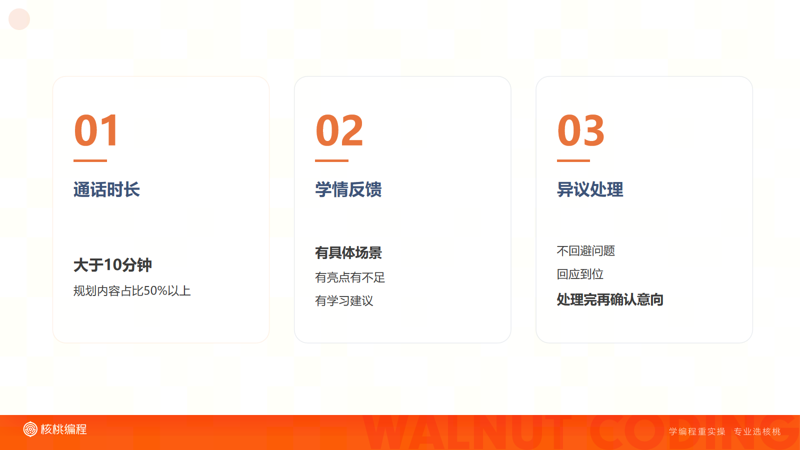
规划电话的质检标准一共三个维度，是大家打完电话自查、组长抽检的依据，也是本次考核标准。第一，通话时长。要求大于 10 分钟，而且规划相关内容占比要在 50% 以上。电话太短，考级、赛事、规划很难讲透；但也不是闲聊凑时长，寒暄不能占大头，赛考规划的内容要占到一半以上。第二，学情反馈，三个硬性要求：有具体场景，有亮点有不足，有学习建议。不能空泛地说孩子学得不错，要拿课堂实例；既肯定做得好的地方，也客观指出薄弱点，最后给出能落地的学习建议，家长才会觉得专业可信。第三，异议处理，也是三点：不回避问题，回应到位，处理完再确认意向。家长有顾虑不要绕开，按前面的标准逻辑回应清楚；讲完不能直接挂电话，要再次确认家长要不要报名考级或赛事。来看一道题，按考核标准，学情反馈的要求是？
互动题
按考核标准，学情反馈的要求是？
- A. 有具体场景、有亮点有不足、有学习建议
- B. 不回避问题、回应到位、处理完再确认意向
- C. 大于10分钟、规划内容占比50%以上
- D. 用具体数据说亮点、只讲优点
选错后：重讲本页重触发
恭喜大家完成本次学习！请用飞书扫一扫屏幕上的二维码，填写规划沟通调研问卷，把你的真实感受告诉我们。填写完成后，回答下面这道题就可以了。
最后送大家一句话：电访打得好，招报没烦恼。
题库（阶段小测 + 综合测试）
T-S01 · 阶段练习题·单选 · 规划电访-阶段1 · 答案 B
规划电访的核心定位是什么？
- A. 打电话当场说服家长报名赛事
- B. 摸底意向，不催报名
- C. 重点和家长催长期续报
- D. 主要用来解决家长投诉
T-S02 · 阶段练习题·单选 · 规划电访-阶段1 · 答案 A
按PPT，规划电访的完成时间要求是？
- A. L8-4前必须完成
- B. L9-2前必须完成
- C. L8-2前必须完成
- D. L9-4前必须完成
T-S03 · 阶段练习题·多选 · 规划电访-阶段1 · 答案 A
按PPT，下列哪项属于规划电访对老师的作用？
- A. 为正式报名沟通做铺垫
- B. 清楚孩子当前水平
- C. 知道接下来学什么
- D. 看到课程对孩子的帮助
T-S04 · 阶段练习题·多选 · 规划电访-阶段1 · 答案 AB
以下哪一项不属于规划电访对家长的作用？
- A. 清楚孩子当前编程水平
- B. 知道后续学习内容
- C. 建立明确的学习预期
- D. 直接敲定赛事报名
T-S05 · 阶段练习题·单选 · 规划电访-阶段1 · 答案 A
按PPT，规划电访对家长的作用，除清楚孩子当前水平、知道接下来学什么外，还包括？
- A. 看到课程对孩子的帮助、对编程学习有明确预期
- B. 建立专业可信形象、提升家长粘性
- C. 提前摸清家长真实意向
- D. 为正式报名沟通做铺垫
T-S06 · 阶段练习题·多选 · 规划电访-阶段2 · 答案 ABC
（多选）按PPT，家长主要分为哪几类？
- A. 思维型
- B. 混合动机型
- C. 精英升学型
- D. 托管型
T-S07 · 阶段练习题·单选 · 规划电访-阶段2 · 答案 B
在规划电话沟通流程中，第一步是？
- A. 学情反馈
- B. 自然开场
- C. 讲考级
- D. 处理异议
T-S08 · 阶段练习题·单选 · 规划电访-阶段2 · 答案 B
CTL 考级的主办指导单位是？
- A. 工信部教育与考试中心
- B. 共青团中央主管、清华计算机系指导
- C. 共青团直属基金会
- D. 央视科创组委会
T-S09 · 阶段练习题·单选 · 规划电访-阶段2 · 答案 B
关于 Roborave 赛事，下面说法正确的是？
- A. 由清华计算机系牵头命题评审
- B. 获得央视新闻权威认可，可积累全球化科创履历
- C. 通过率 90% 以上，定位只是模拟考
- D. 一年有多次比赛机会
T-S10 · 阶段练习题·单选 · 规划电访-阶段2 · 答案 B
家长提出 “孩子学得一般，考不过”，对应的标准回应逻辑是？
- A. 直接建议不要报名，等学好再说
- B. 通过率 90%+，主要是积累经验，为比赛做铺垫
- C. 告诉家长考不过也可以全额退费
- D. 跟家长说必须报名，才有参赛资格
T-S11 · 阶段练习题·单选 · 规划电访-阶段3 · 答案 B
规划电话合格的通话时长要求是？
- A. 大于 8 分钟
- B. 大于 10 分钟
- C. 大于 12 分钟
- D. 大于 15 分钟
T-S12 · 阶段练习题·单选 · 规划电访-阶段3 · 答案 B
规划电话里，规划相关内容占比要求？
- A. 30% 以上
- B. 50% 以上
- C. 70% 以上
- D. 90% 以上
T-S13 · 阶段练习题·单选 · 规划电访-阶段3 · 答案 B
不属于合格学情反馈要求的是？
- A. 有具体场景
- B. 只讲亮点，不提不足
- C. 有亮点也有不足
- D. 给出学习建议
T-S14 · 阶段练习题·单选 · 规划电访-阶段3 · 答案 A
按考核标准，异议处理完之后应做什么？
- A. 再确认意向
- B. 直接结束通话
- C. 直接进入收口
- D. 默认家长已同意
T-S15 · 阶段练习题·单选 · 规划电访-阶段3 · 答案 C
关于规划电话质检标准，说法正确的是？
- A. 只要时长够，就一定达标
- B. 学情反馈只夸孩子，不用提短板
- C. 家长疑问不能回避，要规范回应
- D. 规划内容占比没有硬性要求
T-F01 · 本章综合测试题·单选 · 规划电访·全章 · 答案 A
规划电访中，赛考说明后家长表示犹豫，按PPT应如何推进？
- A. 进异议处理，处理完再确认一次支持度，不默认同意
- B. 不要多讲含金量，直接进费用说明
- C. 跳过赛考说明，直接收口
- D. 默认家长同意，进入费用说明
T-F02 · 本章综合测试题·多选 · 规划电访·全章 · 答案 ABCD
对于家长，规划电访的作用是？（多选）
- A. 清楚孩子当前水平
- B. 知道接下来学什么
- C. 看到课程对孩子的帮助
- D. 对编程学习有明确预期
T-F03 · 本章综合测试题·多选 · 规划电访·全章 · 答案 ABCD
在打规划电访之前我们应该了解哪些信息做好哪些准备？（多选）
- A. 孩子学习数据
- B. 家长属于哪一类
- C. 省份政策与竞争情况
- D. 确定好电访合适的时间
T-F04 · 本章综合测试题·多选 · 规划电访·全章 · 答案 ABCDE
规划电访的步骤包含？（多选）
- A. 自然开场
- B. 学情复盘
- C. 赛考说明
- D. 费用说明
- E. 收口
T-F05 · 本章综合测试题·多选 · 规划电访·全章 · 答案 A
按PPT，精英升学型家长的长期目标是？
- A. CSP-J/S、小升初/初升高
- B. 白名单赛事，市一省二国三
- C. 告知家长孩子优秀即可
- D. 本学期赛考必须参加
T-F06 · 本章综合测试题·单选 · 规划电访·全章 · 答案 A
家长问「为什么要花600元」，按PPT回应逻辑是？
- A. 官方考试，核桃代收，机构不赚一分钱，赛考辅导全程免费
- B. 考点高度重合、效率最高，国家级比赛一年只有一次机会
- C. 编程没有统一高考，证书=分数
- D. 报名窗口固定，现在报锁定的是「考位」
T-F07 · 本章综合测试题·单选 · 规划电访·全章 · 答案 A
家长说「现在参加太早了」，按PPT回应逻辑是？
- A. 只是提前了解，真正考试在Level 4，时间绝对充足
- B. 通过率90%+，主要是积累经验，为比赛做铺垫
- C. 报名窗口固定，辅导是长周期
- D. 这个年龄段的正常心理，老师可直接跟孩子沟通鼓励
T-F08 · 本章综合测试题·单选 · 规划电访·全章 · 答案 A
YCL的主办单位是？
- A. 工业和信息化部教育与考试中心、中国电子教育学会联合主办
- B. 共青团中央主管
- C. 清华大学计算机系
- D. 计算机电子学会
T-F09 · 本章综合测试题·多选 · 规划电访·全章 · 答案 A
图灵杯的主办与命题评审单位是？
- A. 共青团直属基金会主办，清华大学计算机科学与技术系牵头命题和评审
- B. 共青团中央主管，清华计算机系指导
- C. 工业和信息化部教育与考试中心、中国电子教育学会联合主办
- D. 央视新闻等权威媒体认可
T-F10 · 本章综合测试题·多选 · 规划电访·全章 · 答案 AB
（多选）家长质疑整个赛考含金量，按PPT回应逻辑包括？
- A. 类比大学四六级、清华牵头命题的奥数
- B. 含金量不是「有无」，是「多与少」
- C. 阶段性检测价值+核桃NOI金牌数据佐证
- D. 考点高度重合、效率最高